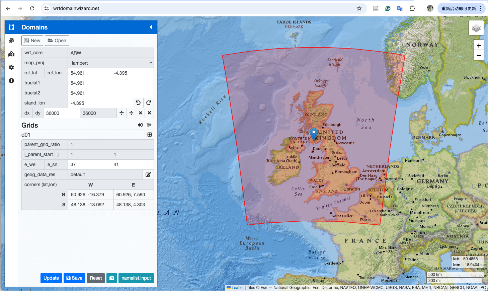

2 Input data¶
The following scripts are provided by the author for creating input data for a single-domain simulation. Instructions for generating input data for nested, multi-domain simulations are described in a separate section.
export CASE_DIR=${WRF_ROOT}/cases/
export CASENAME=TestSingleDomain
export CASEINPUT_DIR=${CASE_DIR}${CASENAME}/input/
export WPSINPUT_DIR=${CASEINPUT_DIR}wps/
export CTSMINPUT_DIR=${CASEINPUT_DIR}ctsm/
export WRFINPUT_DIR=${CASEINPUT_DIR}wrf/
2.1 Define A Single Domain¶
Go to https://wrfdomainwizard.net/
Modify grid parameters
For example, grid spacing
dx,dy. 36000 means 3.6 km.

Click the
savebutton at the bottom to save thenamelist.inputOr, click
namelist.inputbutton to get content
2.2 Run WPS¶
Please refer to official resources:
Running WPS with namelist.wps should generate met_em.d01.* and geo_em.d01.nc
2.3 Run create_scrip_file.ncl¶
cd ${WRF_ROOT}/${WRFNAME}/${CTSMNAME}/tools/contrib/create_scrip_file.ncl/
ln -sf ${WPSINPUT_DIR}geo_em.d01.nc .
ncl create_scrip_file.ncl > ${CTSMINPUT_DIR}/create_scrip_file.log 2>&1
mv *nc ${CTSMINPUT_DIR}
rm geo_em.d01.nc
If run successfully,
wrf2clm_land.ncandwrf2clm_ocean.ncshould be created.Then, unstructure the
wrf2cl_land.ncto get unstructured meshcd ${CTSMINPUT_DIR} export ESMF=${ESMFDIR}/bin export GRIDFILE=wrf2clm_land.nc export LANDMESHFILE=lnd_mesh.nc ${ESMF}/ESMF_Scrip2Unstruct ${GRIDFILE} ${LANDMESHFILE} 0 ncap2 -s 'elementMask(:)=0' ${LANDMESHFILE} mask_${LANDMESHFILE} --overwrite
If run successfully,
lnd_mesh.ncandmask_lnd_mesh.ncshould be created
2.4 Run mkunitymap.ncl¶
cd ${WRF_ROOT}/${WRFNAME}/${CTSMNAME}/tools/site_and_regional/mkunitymap.ncl/
export GRIDFILE1=${CTSMINPUT_DIR}/wrf2clm_ocean.nc
export GRIDFILE2=${CTSMINPUT_DIR}/wrf2clm_land.nc
export MAPFILE=${CTSMINPUT_DIR}/wrf2clm_mapping.nc
PRINT=TRUE
ncl mkunitymap.ncl > ${CTSMINPUT_DIR}/mkunitymap.log 2>&1
If run successfully,
wrf2clm_mapping.ncshould be created.
2.5 Run gen_domain¶
cd ${WRF_ROOT}/${WRFNAME}/${CTSMNAME}/tools/mapping/gen_domain_files
./gen_domain -m ${CTSMINPUT_DIR}/wrf2clm_mapping.nc -o wrf2clm_ocn_noneg -l wrf2clm_lnd_noneg > ${runs_ctsm}/gen_domain.log 2>&1
mv domain.* ${CTSMINPUT_DIR}
If run successfully, three files should be created as follows (
250510is the date of running):domain.lnd.wrf2clm_lnd_noneg_wrf2clm_ocn_noneg.250510.ncdomain.ocn.wrf2clm_lnd_noneg_wrf2clm_ocn_noneg.250510.ncdomain.ocn.wrf2clm_ocn_noneg.250510.nc
2.6 Run gen_mksurfdata_namelist¶
cd ${WRF_ROOT}/${WRFNAME}/${CTSMNAME}/tools/mksurfdata_esmf
export START_YEAR=2022
export END_YEAR=2022
export INPUT_PATH=${CESM_ROOT}/cesm_inputdata
export RES=3.6x3.6
./gen_mksurfdata_namelist --start-year ${START_YEAR} --end-year ${END_YEAR} --res ${RES} --model-mesh ${runs_ctsm}/${LANDMESHFILE} --rawdata-dir ${INPUT_PATH} --model-mesh-nx 60 --model-mesh-ny 81 > gen_mksurfdata_namelist.log 2>&1
mv surfdata* ${CTSMINPUT_DIR}
If run successfully,
surfdata.namelistshould be created.
2.7 Run mksurfdata_esmf¶
Download raw data required in
surfdata.namelistfor creating CTSM surface data from CESM raw data svnCreate a job script to run
mksurfdata_esmf(taking hours), for example,#!/bin/bash # This script is used for make surface region in Archer2 #SBATCH --job-name mksurfdata_jobscript_single #SBATCH --partition=standard #SBATCH --qos=long #SBATCH --account= #SBATCH --time=48:00:00 #SBATCH --nodes=1 #SBATCH --ntasks-per-node=1 #SBATCH --cpus-per-task=128 #SBATCH --output=mksurfdata_jobscript_single.out #SBATCH --error=mksurfdata_jobscript_single.err export OMP_NUM_THREADS=$SLURM_CPUS_PER_TASK export CASENAME=wrf_GM3d export WORKDIR=/work/n02/n02/yuansun/wrf/runs/${CASENAME}/configuration/CTSM export ESMFTOOL=/work/n02/n02/yuansun/wrf/WRFnoleap-CTSM/CTSMdev/tools/mksurfdata_esmf cd ${ESMFTOOL} . ${ESMFTOOL}/tool_bld/.env_mach_specific.sh if [ $? != 0 ]; then echo "Error running env_mach_specific script"; exit -4; fi time srun --hint=nomultithread --distribution=block:block ${ESMFTOOL}/tool_bld/mksurfdata < ${WORKDIR}/surfdata.namelist if [ $? != 0 ]; then echo "Error running for namelist ${WORKDIR}/surfdata.namelist"; exit -4; fi echo Successfully ran resolution
If run successfully, surface data like
surfdata_1.2x1.2_SSP5-8.5_2022_78pfts_c250607.ncshould be generated withsurfdata_1.2x1.2_SSP5-8.5_2022_78pfts_c250607.logended with:Successfully created surface data output file = surfdata_1.2x1.2_SSP5-8.5_2022_78pfts_c250607.nc This file contains the land model surface data Successfully ran mksurfdata_esmf
For
END_YEAR>START_YEAR, a time-series land use data should also be created, likelanduse.timeseries_1.2x1.2_SSP5-8.5_2022-2023_78pfts_c250607.nc.